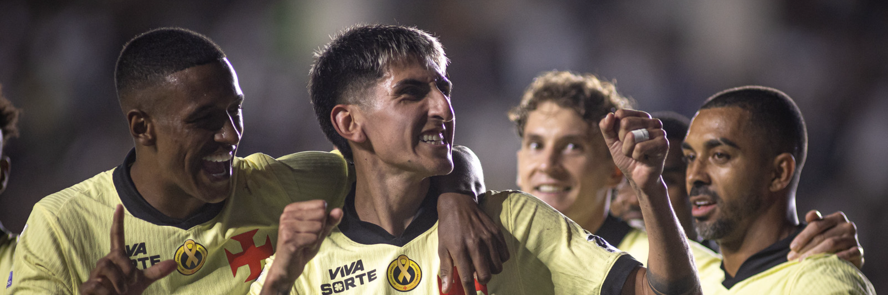
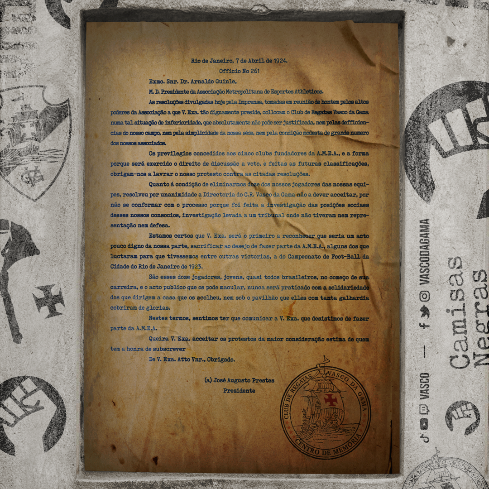

1. Página Inicial
O objetivo principal do site Aqui é Vasco é centralizar e fornecer informações relevantes, notícias atualizadas, dados históricos e curiosidades sobre a história e o cotidiano do clube para a torcida.

Veja as noticias de hoje
Resposta Histórica
O marco imortal de 1924 em que o Vasco da Gama lutou contra o preconceito e defendeu a inclusão no futebol brasileiro.

Curiosidades
O Vasco da Gama é conhecido por sua rica história e tradição no futebol brasileiro. Aqui estão algumas curiosidades sobre o clube:
- Fundado em 21 de agosto de 1898, o Vasco da Gama é um dos clubes mais antigos do Brasil.
- O clube tem uma forte ligação com a comunidade portuguesa no Brasil, refletida em seu nome e símbolos.
- O Vasco foi pioneiro na inclusão de jogadores negros e de classes sociais menos favorecidas no futebol brasileiro.
- O estádio do Vasco, São Januário, é um dos maiores estádios privados do Brasil e tem uma rica história de eventos esportivos e culturais.
- O clube possui uma das torcidas mais apaixonadas do país, conhecida por seu apoio incondicional em todos os momentos.